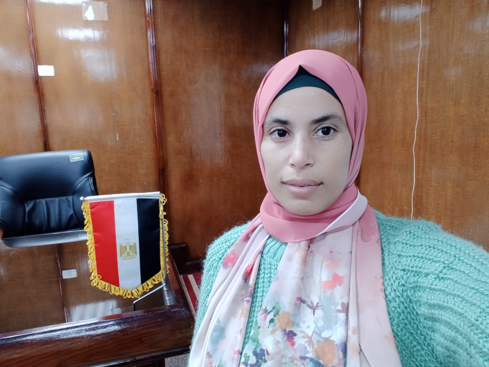

بيئة تدريب لتطبيق الجانب العملي لرسالة الماجستير بعنوان:
{ اختلاف نمط التحدي في بيئة تدريب قائمة على محفزات الألعاب الرقمية وأثره على تنمية بعض مهارات دمج التكنولوجيا في التعليم لدى أعضاء الهيئة المعاونة بالكلية }
الإعداد:
خلود جمال أبوبكر
معيدة بقسم تكنولوجيا التعليم والحاسب الآلي
الإشراف:
الأستاذ الدكتور/ أمل السيد أحمد الطاهر
استاذ تكنولوجيا التعليم المساعد
كلية التربية النوعية جامعة الزقازيق
الأستاذ الدكتور/ نجلاء سعيد محمد
استاذ تكنولوجيا التعليم المساعد
كلية التربية النوعية جامعة الزقازيق

دكتور/ لمياء محمد الهادي
مدرس تكنولوجيا التعليم
كلية التربية النوعية جامعة الزقازيق